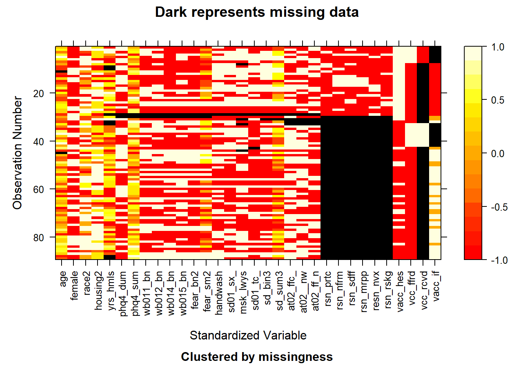
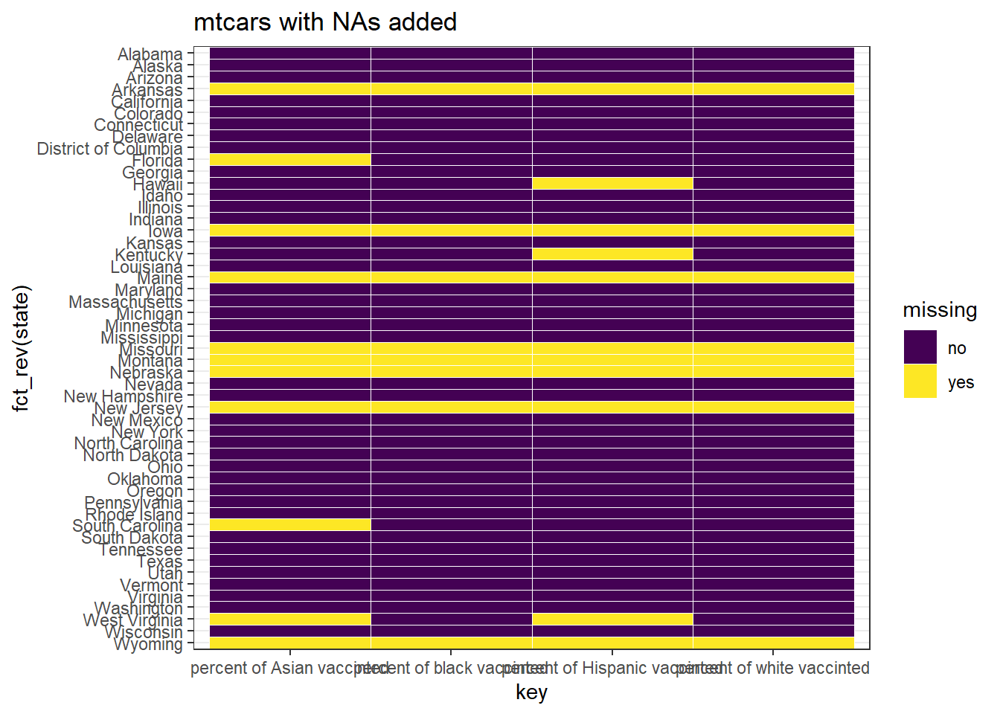
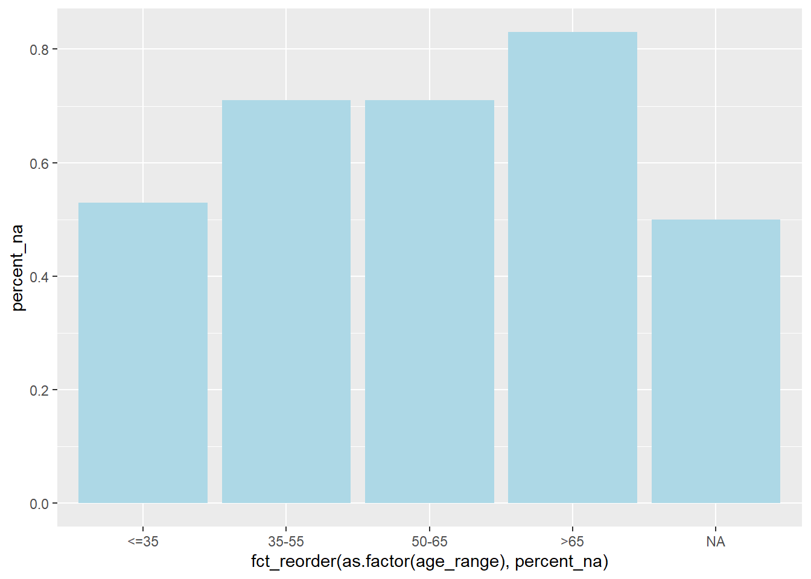
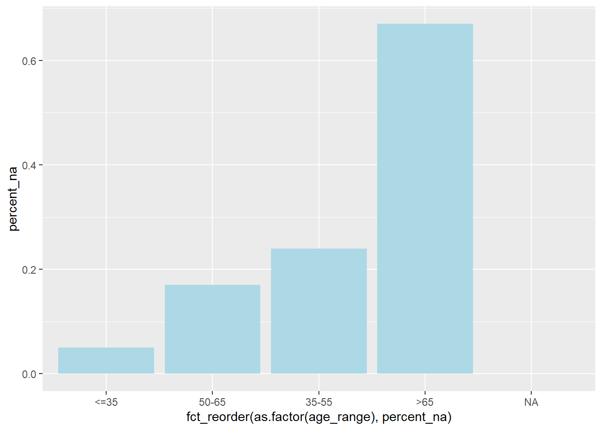

Chapter 4 Missing values
4.1 2021 COVID-19 Vaccine Attitudes among People Experiencing Homelessness in Los Angeles, CA
We noticed that two of our datasets have missing values. For the data of 2021 COVID-19 Vaccine Attitudes among People Experiencing Homelessness in Los Angeles, CA, 619 values are missing.
By analyzing the missing values by columns and based on the missing data plots, we can observe that most data of vaccination received is missing and the questions about reasons for COVID-19 vaccine hesitancy are lack of response.
## NOTE: The following pairs of variables appear to have the same missingness pattern.
## Please verify whether they are in fact logically distinct variables.
## [,1] [,2]
## [1,] "phq4_dum" "phq4_sum"
## [2,] "phq4_dum" "wb011_binary"
## [3,] "phq4_dum" "wb012_binary"
## [4,] "phq4_dum" "wb014_binary"
## [5,] "phq4_dum" "wb015_binary"
## [6,] "phq4_dum" "fear_bin2"
## [7,] "phq4_dum" "fear_sum2"
## [8,] "phq4_sum" "wb011_binary"
## [9,] "phq4_sum" "wb012_binary"
## [10,] "phq4_sum" "wb014_binary"
## [11,] "phq4_sum" "wb015_binary"
## [12,] "phq4_sum" "fear_bin2"
## [13,] "phq4_sum" "fear_sum2"
## [14,] "wb011_binary" "wb012_binary"
## [15,] "wb011_binary" "wb014_binary"
## [16,] "wb011_binary" "wb015_binary"
## [17,] "wb011_binary" "fear_bin2"
## [18,] "wb011_binary" "fear_sum2"
## [19,] "wb012_binary" "wb014_binary"
## [20,] "wb012_binary" "wb015_binary"
## [21,] "wb012_binary" "fear_bin2"
## [22,] "wb012_binary" "fear_sum2"
## [23,] "wb014_binary" "wb015_binary"
## [24,] "wb014_binary" "fear_bin2"
## [25,] "wb014_binary" "fear_sum2"
## [26,] "wb015_binary" "fear_bin2"
## [27,] "wb015_binary" "fear_sum2"
## [28,] "fear_bin2" "fear_sum2"
## [29,] "handwash" "sd01_sixfeet_dum"
## [30,] "sd_bin3" "sd_sum3"
## [31,] "at02_official_any" "at02__newspapersradioortv"
## [32,] "at02_official_any" "at02_ff_any"
## [33,] "at02__newspapersradioortv" "at02_ff_any"
About 50% of all rows are following the pattern of missing both the vaccination reception and vaccine hesitancy reason response. There are very few rows missing demographic information and COVID-19 threat index including fear of COVID-19 and protective actions. 
Hence, in our future analysis, if we would like to analyze the reasons that cause the hesitation of taking COVID-19 vaccination among the homelessness, the missing data might reduce the power of analysis and conclusion on this problem.
Moreover, we focused on the trend of the missing values and the possible relationship between the variables and NAs, especially for the reasons for vaccine hesitancy and the response of whether taking vaccine if offered one. The bar plots show that the percentages of missing values are higher among the data collected from the older people. 

4.2 Vaccination by Race
Based on missing value heatmap, the pattern of missing values can be clearly observed and summarized. The x axis is the percentage of people with different race who got vaccinated, and y axis contains the states.
There are 7 states in total having missing values. There are missing values for every columns, and the missing pattern of percent of black vaccinated and percent of white vaccinated are the same. In other words, if values missing in the former, then the missing values are more likely to appear the later one.